Modular Level/Environment Design
Game Levels
Game level: A place you explore in a game. There are usually points to start off, and an exit or goal.
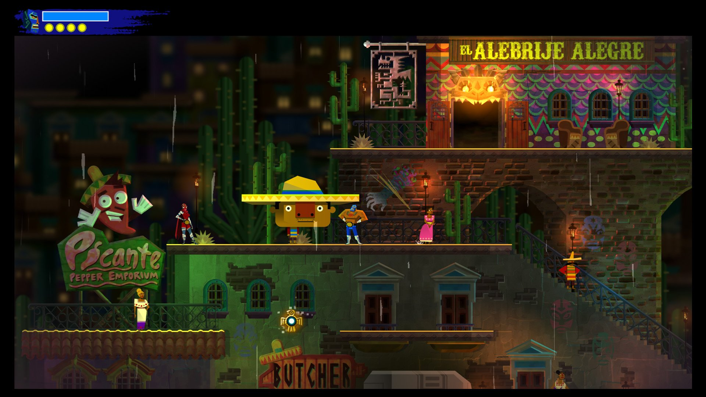
Guacamelee
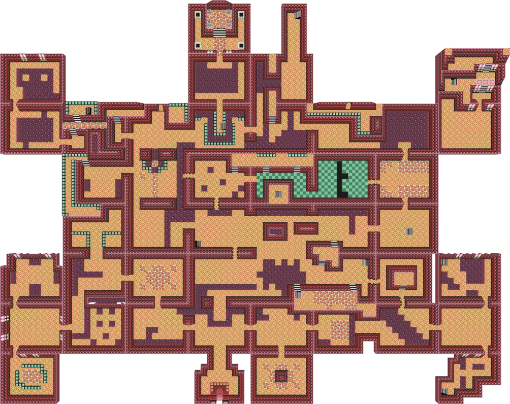
Level 8 by Lord Mithios on Deviantart
Things a level has
The list of things a level has could go on forever, or a level can have none of them. It’s up to the designer and the game type. Here are some of the most common.
- Spawn points
- Ground, barriers, sky or ceiling
- Obstacles
- Items. Pickups, hazards, info points.
- Enemies
- Bosses
- Paths for you/Enemies
- Secrets
- Often an exit or goal.
- Collidable things
Level Editors
In a game these things could be defined by geometry, by imported xml/bsp files, by objects placed in an editor, completely in code, or any other method a team comes up with. We’ll use Maya and Unity.

Unity level editing

Tile based map editing
Modular Construction

Modular: Made up of compatible, standardized units for easy and flexible construction.
Real world environments are big, varied, but also have a lot of repeating features. We need to reduce our concept art to pieces that can snap together seamlessly, or at least in a way that baked light, shaders or post effects can cover for (like ambient occlusion or grungy cavities.)
Here are some of the central ideas:
- Define the footprint of pieces
- Only use non uniform pieces last resort
- Pick a pivot and stick with it
- Base kit for simple, square based layout
- Inserts to make it organic, cover corners and seams, add interest.
- Lighting brings atmosphere and more variance.
- Obects!

Fallout 4 GDC - Youtube Link

Modular dungeon pieces, Baldi Konijn: - Arstation Link


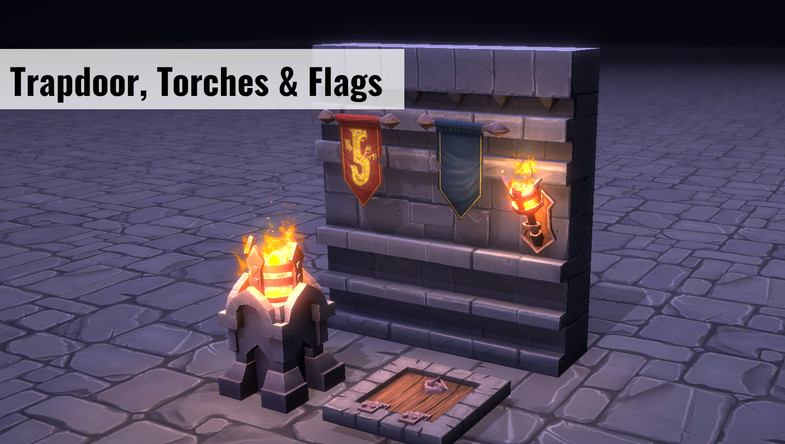
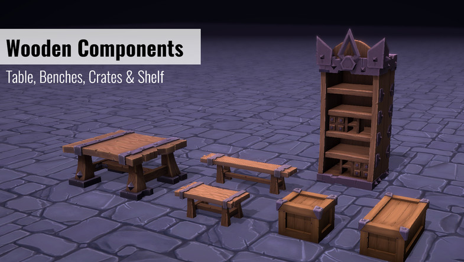
Fantasy Dungeon Starter Kit - Unity Asset Store
Making modules
- Establish a footprint
- square, hex
- can use multiple of these per object
- try to only break this footprint (half, quarter) with good reason
- Establish an origin
- All pieces should join together in a predictable way, say front left corner of footprint.
- Origin should be on a corner, not the center, so we can snap them together
- Unity and other editors support snapping to ensure no seams are created
- Unit snapping or geometry snapping.
- Utility vs Hero
- Mundane room parts are most of the game
- Variant parts are a big part of that
- Hero pieces create truly unique areas but are expensive time eaters… but the heros make the mundane parts work.

Mundane pieces are king! - Fallout 4 GDC talk

But that rug really did tie the room together
More nice modules
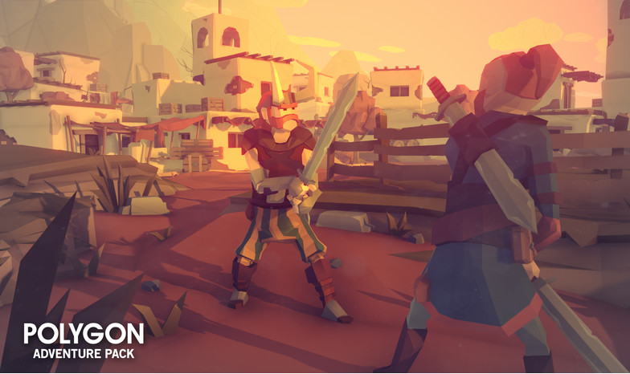

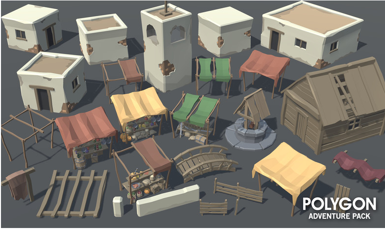
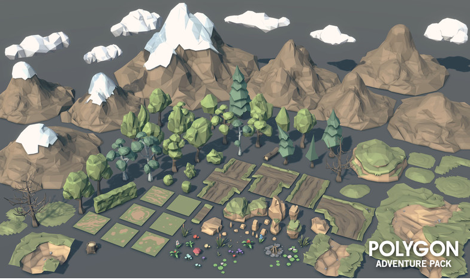

Blocking out and iterating
We can’t make pieces till we know what the game needs.
We won’t really know what the game needs till we make pieces and start testing.
We’re dead.
Wait! We block out, and we iterate. We survive.
- We plan as best we can from experience or example.
- We have a game type and story for the level
- We make ultra simple blocks of our basic pieces to serve that and start building
- We find problems and we fix them
- We discover efficiences where we might have wasted loads of time
- Keep cycling, adding rough textures, tweaking geometry, cleaning textures.
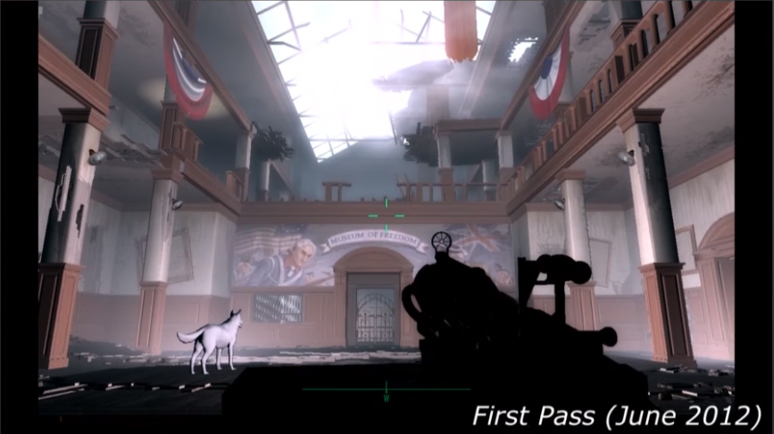
First pass on Fallout 4 Level- Fallout 4 GDC talk
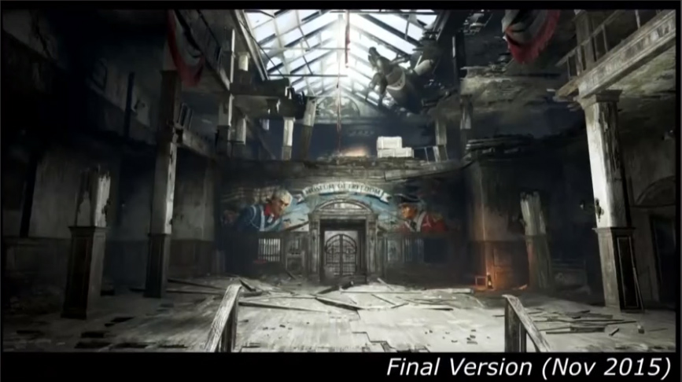
Shipping version of same Fallout 4 Level- Fallout 4 GDC talk
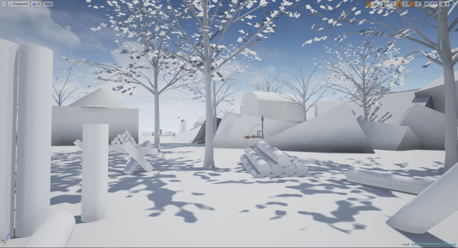
Level Whitebox by ErikStarander

Level Whitebox by ErikStarander
Technical Considerations
- Levels are big, keep geo low. Exception: geometry instancing.
- Minimise rework and reimporting. Unity uses prefabs for this.
- Ram and hdd space aren’t infinite so we repeat a lot of the same texture.
- Different UV procedures.
- Clever seam hiding
- Lots of materials and objects = lots of drawcalls = low frame rate. Techniques like atlasing and batching can get around this, but we have to build accordingly.
- Don’t put holes in everything - use view blocking pieces to keep draw distance down.
- avoids popup
- avoids overlapping transparency blowing out drawcalls
Atlasing
Atlases will be a familiar idea if you’ve done made sprites in 3D, or even in 2D. It’s when you take a lot of textuers and arrange them into a single image. It’s easier and faster for the computer to deal with one large image than many small images, and historically a power of 2 (2048x2048) resolution has been ideal. It can also save space if you support non rectangular shapes.
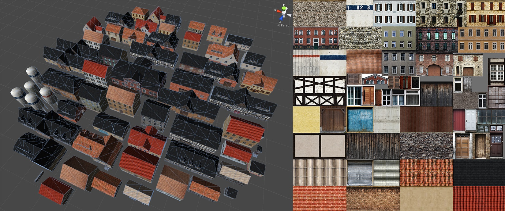
Truck Simulator buildings in Unity alongside their texture atlas

Rayman texture atlas utilising texture space with non rectangular shapes
Fancy Shaders
Have a section of the texture with replaceable colour.
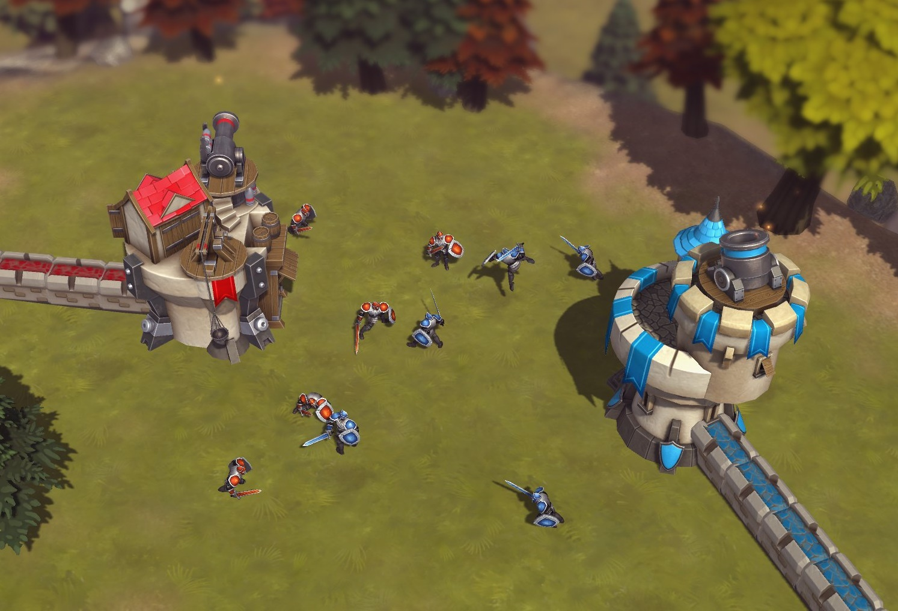
Batching
Batching takes lots of objects using the same material and separate geometry and merges it into a single big object, removing plenty of drawcalls. Atlasing makes it possible to heavily reduce the number of materials.
Two types of batching:
Static Batching: Many objects are batched into a large static object. Like combine in Maya.
Dynamic Batching: Small enough moving objects can be merged and their verts tranformed.
Prefabs
If we break up our objects into the smallest pieces it’s great for reuse, but a pain to build everything we need. Grouping them together into larger pieces once and reusing those pieces would be great. Like making a four pane window with frame from four panes, two beams and a brick frame. This is where a prefab comes in. Then we update a single fbx and all objects using that piece are updated.
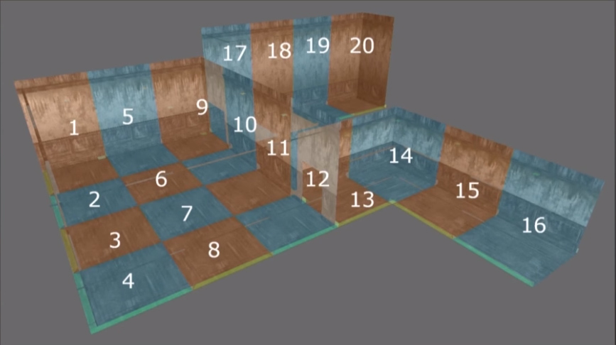
Walls are using parts of floors, 20 pieces
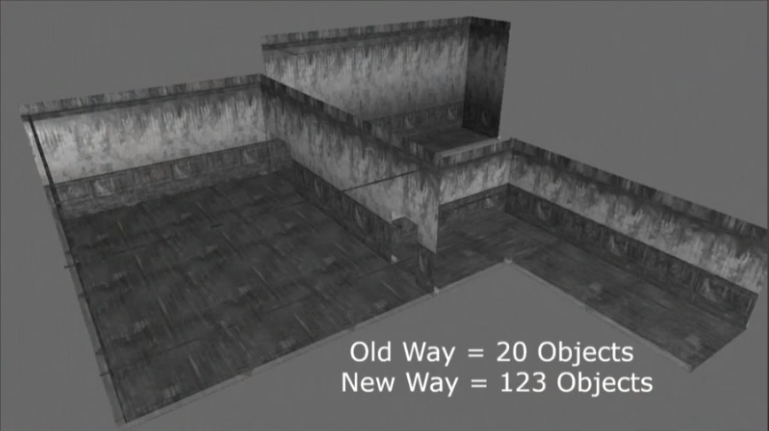
Now more granular - fewer types of pieces but more in scene, much work

Solved with in-editor made, reusable pieces: prefabs
Game Logic Controls
Your coders, or fingers if you are doing everything, will supply you with a variety of odd objects to drop into your scene. These might be waypoints for enemies to follow, the path a trail of magical fire will take, or spawnpoints. These are often a 3D object with a script attached.
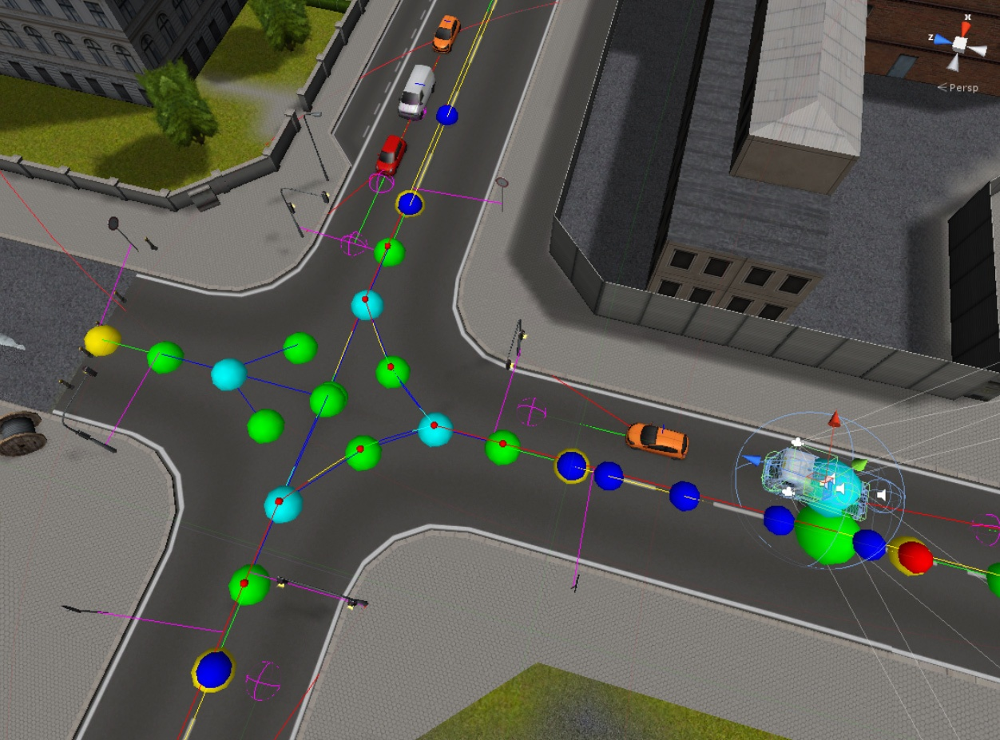